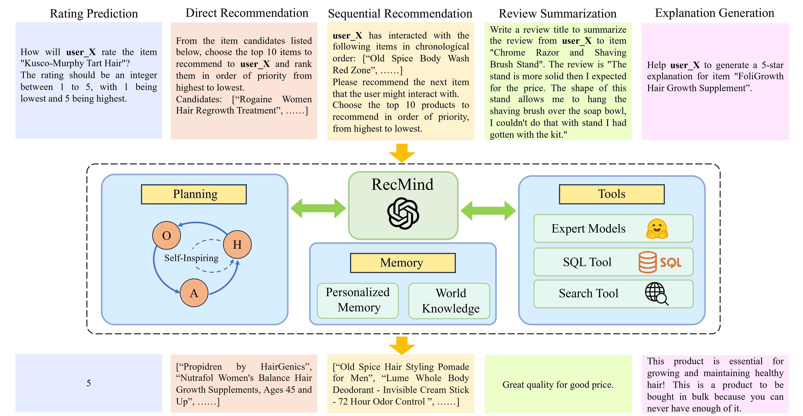
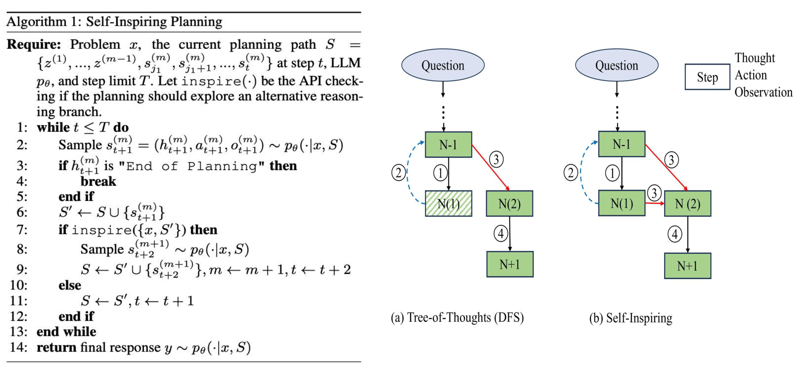
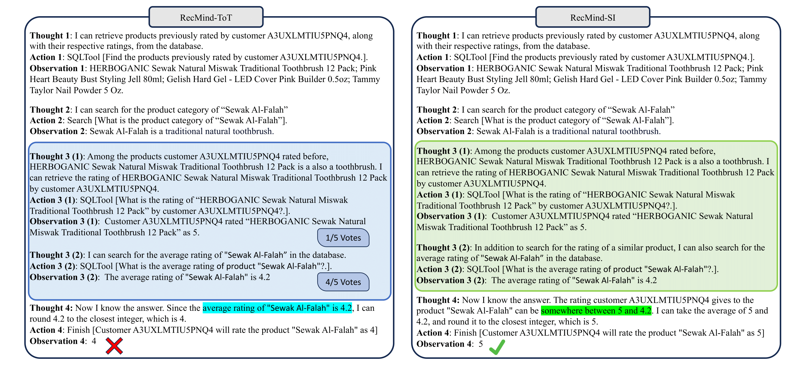

Agent Walkthrough
RecMind plans, calls tools, and revises its answer before returning a recommendation.
Breaks a user request into smaller reasoning steps.
Queries memory and external tools instead of guessing.
Compares intermediate traces before giving the final answer.
Demo walkthrough of RecMind interacting with recommendation tools, memory, and planning modules.
While the recommendation system (RS) has advanced significantly through deep learning, current RS approaches usually train and finetune models on task-specific datasets, limiting their generalizability to new recommendation tasks and their ability to leverage external knowledge due to model scale and data size constraints. Thus, we designed an LLM powered autonomous recommender agent, RecMind, which is capable of leveraging external knowledge, utilizing tools with careful planning to provide zero-shot personalized recommendations.

Here is an overview of our proposed RecMind architecture. It comprises four major components: "RecMind" is built based on ChatGPT API, "Tools" support various API call to retrieve knowledge from "Memory" component, "Planning" component is in charge of thoughts generation.

Planning helps LLM Agents decompose tasks into smaller, manageable subgoals for handling complex tasks.

Comparisons of rating prediction by RecMind-ToT (left) and RecMind-SI (right). After searching for the product category of the item in Step 2, RecMind-ToT first generates thought 3 (1) to retrieve the rating of a similar item. After being evaluated by the voting-based evaluator, RecMind-ToT prunes option 3 (1) and proposes another thought 3 (2) to retrieve the average rating of the item and then makes the prediction solely based on it. In contrast, although RecMind-SI proposed the same alternative options in step 3, it takes into account the thought, action, and observation from both options 3 (1) and 3 (2) to generate the thought for the next step
Empirical Coverage
Instead of showing a single benchmark table, this section highlights how RecMind behaves across prediction, ranking, explanation, and transfer settings.
Table 1 in the paper shows that RecMind-SI achieves the best RMSE and MAE on both Beauty and Yelp among the compared prompt-based methods.
| Methods | Beauty | Yelp | ||
|---|---|---|---|---|
| RMSE | MAE | RMSE | MAE | |
| MF | 1.1973 | 0.9461 | 1.2645 | 1.0426 |
| MLP | 1.3078 | 0.9597 | 1.2951 | 1.0340 |
| AFM | 1.1097 | 0.8815 | 1.2530 | 1.0019 |
| P5 (pre-trained expert, few-shot) | 1.2982 | 0.8474 | 1.4685 | 1.0054 |
| ChatGPT (zero-shot) | 1.4173 | 1.1897 | 1.6725 | 1.2359 |
| ChatGPT (few-shot) | 1.1589 | 0.7327 | 1.4725 | 1.0016 |
| RecMind-CoT (zero-shot) | 1.2250 | 0.8612 | 1.5302 | 1.1673 |
| RecMind-CoT (few-shot) | 1.1326 | 0.7167 | 1.3925 | 0.9794 |
| RecMind-ToT (BFS, zero-shot) | 1.1972 | 0.8135 | 1.4956 | 1.0755 |
| RecMind-ToT (BFS, few-shot) | 1.1197 | 0.7059 | 1.3875 | 0.9766 |
| RecMind-ToT (DFS, zero-shot) | 1.2006 | 0.8279 | 1.4937 | 1.1076 |
| RecMind-ToT (DFS, few-shot) | 1.1205 | 0.7103 | 1.3826 | 0.9774 |
| RecMind-SI (zero-shot) | 1.1894 | 0.7883 | 1.4530 | 1.0009 |
| RecMind-SI (few-shot) | 1.0756 | 0.6892 | 1.3674 | 0.9698 |
On the 100-candidate recommendation setting, explicit planning helps RecMind narrow down better candidates, while RecMind-SI (few-shot) gives the strongest LLM-based results on Beauty and Yelp.
| Methods | Beauty | Yelp | ||||||
|---|---|---|---|---|---|---|---|---|
| HR@5 | NDCG@5 | HR@10 | NDCG@10 | HR@5 | NDCG@5 | HR@10 | NDCG@10 | |
| BPR-MLP | 0.1392 | 0.0848 | 0.2542 | 0.1215 | 0.1876 | 0.1184 | 0.3066 | 0.1566 |
| ENMF | 0.1537 | 0.1124 | 0.2479 | 0.1453 | 0.2235 | 0.1448 | 0.3379 | 0.1851 |
| P5 (pre-trained expert, few-shot) | 0.1478 | 0.1003 | 0.2159 | 0.1289 | 0.2105 | 0.1360 | 0.3182 | 0.1746 |
| ChatGPT (zero-shot) | 0.0146 | 0.0107 | 0.0705 | 0.0235 | 0.0479 | 0.0265 | 0.0751 | 0.0326 |
| ChatGPT (few-shot) | 0.0228 | 0.0157 | 0.0903 | 0.0362 | 0.0512 | 0.0300 | 0.0879 | 0.0412 |
| RecMind-CoT (zero-shot) | 0.0497 | 0.0325 | 0.1129 | 0.0637 | 0.0992 | 0.0719 | 0.1673 | 0.1170 |
| RecMind-CoT (few-shot) | 0.0682 | 0.0387 | 0.1345 | 0.0814 | 0.1262 | 0.0897 | 0.1840 | 0.1359 |
| RecMind-ToT (BFS, zero-shot) | 0.0574 | 0.0439 | 0.1024 | 0.0771 | 0.1032 | 0.0721 | 0.1596 | 0.1273 |
| RecMind-ToT (BFS, few-shot) | 0.0734 | 0.0402 | 0.1355 | 0.0808 | 0.1649 | 0.0920 | 0.2217 | 0.1503 |
| RecMind-ToT (DFS, zero-shot) | 0.0564 | 0.0432 | 0.1011 | 0.0751 | 0.1022 | 0.0733 | 0.1587 | 0.1266 |
| RecMind-ToT (DFS, few-shot) | 0.0705 | 0.0407 | 0.1302 | 0.0812 | 0.1601 | 0.0904 | 0.2079 | 0.1453 |
| RecMind-SI (zero-shot) | 0.0675 | 0.0524 | 0.1259 | 0.0923 | 0.1055 | 0.0791 | 0.1674 | 0.1293 |
| RecMind-SI (few-shot) | 0.0915 | 0.0624 | 0.1559 | 0.1063 | 0.1749 | 0.0935 | 0.2451 | 0.1607 |
For next-item prediction, RecMind-SI stays competitive with strong supervised baselines such as P5 and S3-Rec, especially in the few-shot setting.
| Methods | Beauty | Yelp | ||||||
|---|---|---|---|---|---|---|---|---|
| HR@5 | NDCG@5 | HR@10 | NDCG@10 | HR@5 | NDCG@5 | HR@10 | NDCG@10 | |
| S3-Rec | 0.0387 | 0.0244 | 0.0647 | 0.0327 | 0.0201 | 0.0123 | 0.0341 | 0.0168 |
| SASRec | 0.0401 | 0.0264 | 0.0643 | 0.0319 | 0.0241 | 0.0175 | 0.0386 | 0.0215 |
| P5 (pre-trained expert, few-shot) | 0.0459 | 0.0347 | 0.0603 | 0.0411 | 0.0565 | 0.0389 | 0.0702 | 0.0441 |
| ChatGPT (zero-shot) | 0.0089 | 0.0053 | 0.0103 | 0.0060 | 0.0102 | 0.0062 | 0.0143 | 0.0089 |
| ChatGPT (few-shot) | 0.0179 | 0.0124 | 0.0256 | 0.0125 | 0.0217 | 0.0116 | 0.0320 | 0.0165 |
| RecMind-CoT (zero-shot) | 0.0182 | 0.0139 | 0.0297 | 0.0160 | 0.0368 | 0.0239 | 0.0554 | 0.0316 |
| RecMind-CoT (few-shot) | 0.0349 | 0.0187 | 0.0486 | 0.0302 | 0.0427 | 0.0305 | 0.0590 | 0.0380 |
| RecMind-ToT (BFS, zero-shot) | 0.0297 | 0.0172 | 0.0368 | 0.0249 | 0.0379 | 0.0251 | 0.0538 | 0.0322 |
| RecMind-ToT (BFS, few-shot) | 0.0387 | 0.0235 | 0.0522 | 0.0327 | 0.0447 | 0.0319 | 0.0624 | 0.0337 |
| RecMind-ToT (DFS, zero-shot) | 0.0299 | 0.0168 | 0.0359 | 0.0241 | 0.0358 | 0.0240 | 0.0519 | 0.0324 |
| RecMind-ToT (DFS, few-shot) | 0.0365 | 0.0211 | 0.0497 | 0.0355 | 0.0455 | 0.0328 | 0.0622 | 0.0349 |
| RecMind-SI (zero-shot) | 0.0339 | 0.0200 | 0.0469 | 0.0310 | 0.0396 | 0.0281 | 0.0569 | 0.0340 |
| RecMind-SI (few-shot) | 0.0415 | 0.0289 | 0.0574 | 0.0375 | 0.0471 | 0.0342 | 0.0635 | 0.0407 |
In explainability-oriented recommendation, RecMind-SI (few-shot) delivers the best scores among all prompt-based variants and is competitive with the specialist model P5 on several metrics.
| Methods | Beauty | Yelp | ||||||
|---|---|---|---|---|---|---|---|---|
| BLEU2 | ROUGE1 | ROUGE2 | ROUGEL | BLEU2 | ROUGE1 | ROUGE2 | ROUGEL | |
| P5 (pre-trained expert, few-shot) | 0.9783 | 17.0412 | 1.8962 | 12.1709 | 1.2784 | 18.1924 | 2.9517 | 13.2315 |
| ChatGPT (zero-shot) | 0.0359 | 9.7892 | 0.7994 | 5.1215 | 0.0419 | 8.9776 | 0.8549 | 6.1715 |
| ChatGPT (few-shot) | 1.1766 | 11.8905 | 2.5894 | 5.8920 | 1.1766 | 12.0901 | 3.2170 | 6.7823 |
| RecMind-CoT (zero-shot) | 0.8985 | 11.0597 | 1.9675 | 7.7471 | 1.1052 | 12.5719 | 2.1941 | 7.7471 |
| RecMind-CoT (few-shot) | 1.3096 | 12.7987 | 2.7015 | 8.0164 | 1.2759 | 13.9690 | 3.0173 | 9.1081 |
| RecMind-ToT (BFS, zero-shot) | 1.0279 | 11.1584 | 2.1024 | 7.7026 | 1.1135 | 11.7230 | 2.2355 | 7.7910 |
| RecMind-ToT (BFS, few-shot) | 1.3054 | 12.8249 | 2.7050 | 8.0596 | 1.2960 | 14.1728 | 3.4539 | 9.6125 |
| RecMind-ToT (DFS, zero-shot) | 1.0319 | 11.3564 | 2.1416 | 7.7166 | 1.1795 | 11.8433 | 2.2416 | 7.8252 |
| RecMind-ToT (DFS, few-shot) | 1.3159 | 12.8975 | 2.7125 | 8.1150 | 1.2896 | 14.2201 | 3.6710 | 9.6719 |
| RecMind-SI (zero-shot) | 1.1589 | 11.6794 | 2.2460 | 7.8974 | 1.1589 | 11.6794 | 2.2460 | 7.8974 |
| RecMind-SI (few-shot) | 1.3459 | 13.2560 | 2.7479 | 8.9614 | 1.3094 | 14.4220 | 3.8974 | 9.7125 |
The paper also reports cross-domain transfer by using Beauty few-shot examples and evaluating on Toys and Sports. RecMind-SI remains the strongest method across the three reported metrics.
| Methods | Domain | MAE ↓ | HR@5 ↑ | BLEU2 ↑ |
|---|---|---|---|---|
| P5 | Beauty → Toys | 0.7932 | 0.0852 | 1.4326 |
| P5 | Beauty → Sports | 0.7013 | 0.1007 | 0.8924 |
| ChatGPT | Beauty → Toys | 0.7354 | 0.0649 | 1.4416 |
| ChatGPT | Beauty → Sports | 0.6895 | 0.7210 | 0.8795 |
| RecMind-ToT | Beauty → Toys | 0.6845 | 0.0841 | 1.3994 |
| RecMind-ToT | Beauty → Sports | 0.6457 | 0.0924 | 1.0002 |
| RecMind-SI | Beauty → Toys | 0.6779 | 0.0902 | 1.5940 |
| RecMind-SI | Beauty → Sports | 0.6245 | 0.1124 | 1.0537 |
@article{wang2023recmind,
title={Recmind: Large language model powered agent for recommendation},
author={Wang, Yancheng and Jiang, Ziyan and Chen, Zheng and Yang, Fan and Zhou, Yingxue and Cho, Eunah and Fan, Xing and Huang, Xiaojiang and Lu, Yanbin and Yang, Yingzhen},
journal={arXiv preprint arXiv:2308.14296},
year={2023}
}